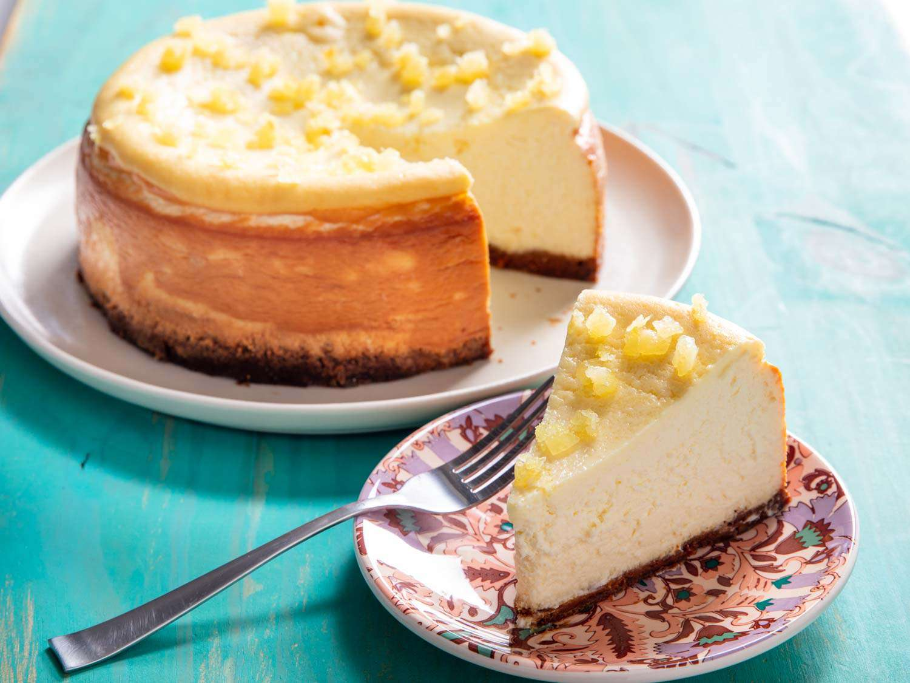

Home
Baklava

Description
Keks, mleko i maslac koji je bio nekoliko sati na sobnoj temperaturi, umesiti rukama i u kalup utapkati rukama za podlogu.
Ingredients
- 300g mlevenog keksa
- 125g maslaca
- 50-100ml hladnog mleka
- 450g Ella sira
- 500ml slatke pavlake
- 1 kesica želatina
- oko 200-230g šećera u prahu
- 1 kesica vanilin šećera + malo arome vanile po želji
- 1 kesica kremfixa
- 450g malina
- 2 kesice crvenog mlevenog želatina
- 4-5 kašika šećera
Steps
- Keks, mleko i maslac koji je bio nekoliko sati na sobnoj temperaturi, umesiti rukama i u kalup utapkati rukama za podlogu.
- Slatku pavlaku umutiti mikserom sa kremfixom. U drugoj posudi umutiti sir sa šećerom u prahu, vanilin šećerom i kašikicom arome vanile. Spojiti ove dve smese.
- Želatin preliti sa 4 kašike hladne vode i ostaviti 10-tak minuta da nabubri. Zatim ga zagrevati na vatri do tačke ključanja (ne sme da provri). Sipati u smesu sa sirom i slatkom pavlakom i izmiksati sve zajedno, zatim fil staviti preko kore.
- Maline (zajedno sa svojim sokom, ukoliko su pustile malo soka, dodati oko 2dcl vode) i šećer staviti da prokuvaju oko 10-tak minuta. 2 kesice želatina preliti sa 8 kašika hladne vode i ostaviti 10 minuta da nabubri. Zatim zagrevati do tačke vrenja, ali ne sme da proključa isto kao i u prethodnom postupku. Otopljen želatin dodati u posudu sa malinama i ostaviti oko sat vremena da se prohladi.
- Preliti fil II preko fila I i ostaviti u frižideru nekoliko sati da se sve stegne.